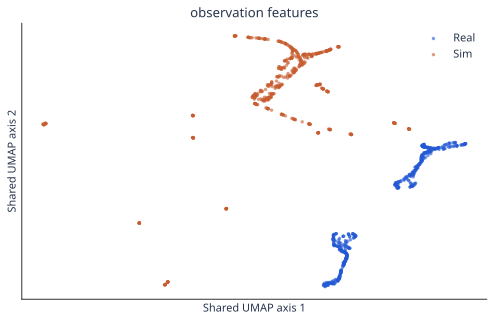
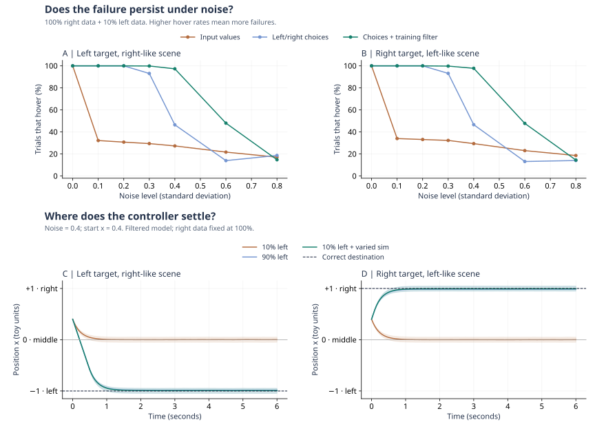
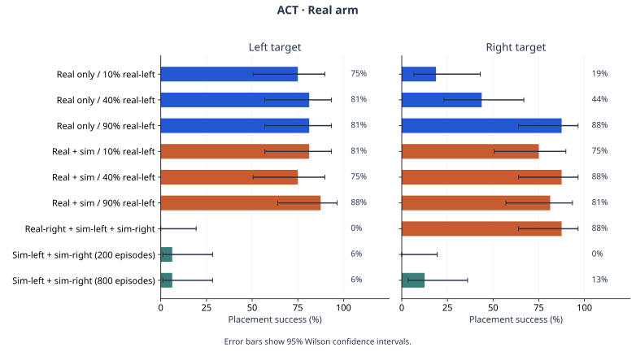

Adding more real-left data
Performance improves on both sides with 40% and 90% real-left data.
SO-101 · Imitation learning · September 2026
A small-scale study of data coverage and behavioral regression on the SO-101
01 Match the scene.
02 Vary the training data.
03 Test both directions.
THE QUESTION
The task is simple: pick up the blue box and place it on the white paper. We move the paper between left and right to test whether the arm follows the target or repeats its training behavior.
01 / MATCH THE REAL SETUP
We build the scene in NVIDIA Isaac Sim using measured object sizes, camera calibration, and similar textures. Both panels show the front camera and a wrist camera.
The reconstruction is close, but differences from the real scene remain. We use domain randomization when collecting simulation data to cover a wider range of appearances and scene settings.
02 / TEST ON THE REAL ARM
Real-right and real-left are real demonstrations with the paper on the right or left. Sim-right and sim-left are simulated demonstrations of those tasks. Left and right refer to the paper's position in the front-camera view.
First, we train on real-right + sim-right + sim-left, with no real-left data. The hope is to transfer the left-target behavior learned in simulation to the real arm. Yet in the real test below, the arm moves right even when the paper is on the left, and the arm moves correctly in simulation, suggesting that the policy still responds differently to real and simulated images, despite their visual similarity.
WHY MIGHT TRANSFER FAIL?
Images can look similar to us but different to the model. A simple classifier could tell real from simulated inputs using the model's internal features.

accuracy at telling real and simulated image inputs apart
Arm poses and movements also differ between real and simulated demonstrations. Image appearance is not the only possible cause.
03 / VARY THE TRAINING DATA
We use all the available real-right training data and vary the amount of real-left data. For each left-data level, we train one model with real data only and one with added simulation.
Each model uses the same 72 real-right demonstrations, plus 8, 32, or 72 real-left demonstrations. We call these left-data levels 10%, 40%, and 90% of the original 80 demonstrations.
| Training group | Real-right | Real-left | Simulation |
|---|---|---|---|
| Real only · 10% / 40% / 90% left | 72 episodes (fixed) | 8 / 32 / 72 episodes | None |
| Real + sim · 10% / 40% / 90% left | 72 episodes (fixed) | Same 8 / 32 / 72 episodes | 90 left + 90 right |
Performance improves on both sides with 40% and 90% real-left data.
A POSSIBLE EXPLANATION
If each target side appears with a different background, a model may learn to use both. In this toy model, G is the paper's side and Z is the side associated with the background: −1 for left, +1 for right. An equal-weight fit chooses destination m:
When the two disagree, m is the middle. The controller then keeps returning there instead of reaching the paper. Without noise or speed limiting, its distance from m shrinks each step:
Hovering persists with noise in this toy. Adding examples with the same background but different paper positions lets the model learn m ≈ G and reach the target. This illustrates a possible mechanism.

The top panels compare continuous inputs, left/right choices, and choices after dropping uncertain training examples. The bottom panels use noise 0.4 and starting position 0.4. Units are toy values, not physical measurements. Varied training adds missing background–target combinations; repeating existing combinations does not resolve the ambiguity.
A “left-like scene” resembles the scenes associated with left targets in training; a “right-like scene” means the reverse. Either side can fail.
04 / RESULTS
We separate task success in simulation, task success on the real arm, and action-prediction error on saved images.

π0.5 was fine-tuned for 20,000 steps. Only its action expert was trained; the vision-language model stayed fixed.
05 / TAKEAWAYS
Similar camera views still led to different behavior. Visual matching alone did not close the sim-to-real gap in our tests.
Adding simulation helped in our low-real-data conditions. Simulation alone transferred poorly.
Next, test new object positions, lighting, and camera views to see how well the gains transfer.